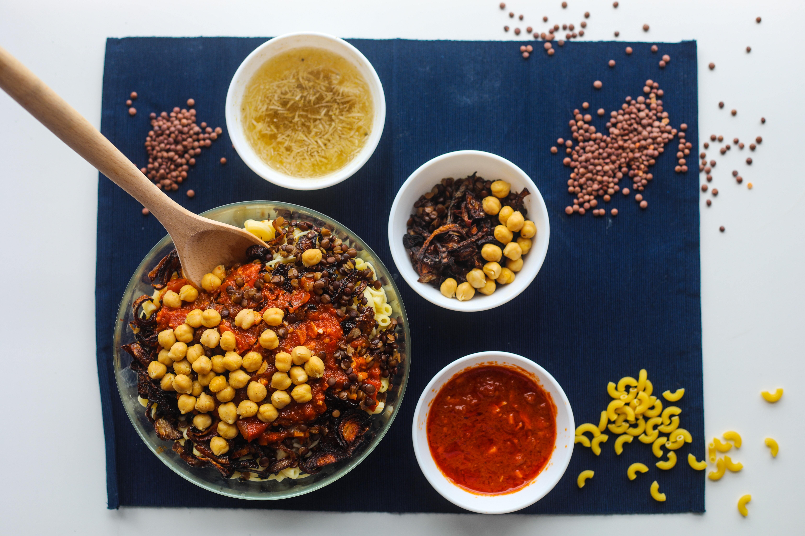

الكشري

وصف قصير
الكشري هو طبق مصري تقليدي فريد من نوعه ، الكشري عبارة عن مزيج من أنواع مختلفة من المعكرونة والأرز والعدس البني ، ويقدم الكشري عليه ثلاث صلصات وهي صلصة الطماطم والصلصة الحارة وصلصة خاصة تسمى الضحى ، الكشري نباتي.
المكونات
<1i>1 بصلة كبيرة مقطعة إلى حلقات رفيعة
- ملح
- ⅓ كوب دقيق لجميع الأغراض
- ½ كوب زيت طبخ
- زيت الطهي
- 1 بصلة صغيرة مبشورة
- 4 فصوص ثوم مفرومة
- 1 ملعقة صغيرة كزبرة مطحونة
- ½ -1 ملعقة صغيرة فلفل أحمر مطحون (اختياري)
- 1 علبة صلصة طماطم 28 أونصة
- ملح وفلفل
- 1-2 ملعقة كبيرة خل أبيض مقطر
- 1 ½ كوب عدس بني مقطوف ومغسل جيداً
- 1 ½ كوب أرز متوسط الحبة ، مغسول ، منقوع في الماء لمدة 15 دقيقة ، ومصفى
- ½ ملعقة صغيرة لكل من الملح والفلفل
- ½ ملعقة صغيرة كزبرة
- 2 كوب باستا
- زيت الطهي
- ماء
- 1 عبوة سعة 15 أوقية من الحمص ، مغسول ، مصفى ومدفأ
الخطوات
- نرش حلقات البصل بالملح ثم نضعها في الدقيق لتغطيها. تخلص من الدقيق الزائد.
- في مقلاة كبيرة ، سخني زيت الطهي على نار متوسطة ، اطهي حلقات البصل مع التحريك المستمر حتى يتحول لونها إلى البني الكراميل اللطيف. يجب أن يكون البصل مقرمشًا ، لكن لا يحترق (15-20 دقيقة).
- في قدر ، سخني ملعقة كبيرة من زيت الطهي. يُضاف البصل المبشور ويُطهى على نار متوسطة عالية حتى يتحول لونه إلى ذهبي نصف شفاف (لا يكتسب اللون البني). أضيفي الآن الثوم ، والكزبرة ، ورقائق الفلفل الأحمر ، في حالة الاستخدام ، وقومي بقليهما لفترة وجيزة حتى تفوح رائحته (30-45 ثانية أخرى).
- في قدر ، سخني ملعقة كبيرة من زيت الطهي. يُضاف البصل المبشور ويُطهى على نار متوسطة عالية حتى يتحول لونه إلى ذهبي نصف شفاف (لا يكتسب اللون البني). أضيفي الآن الثوم ، والكزبرة ، ورقائق الفلفل الأحمر ، في حالة الاستخدام ، وقومي بقليهما لفترة وجيزة حتى تفوح رائحته (30-45 ثانية أخرى).
- نضيف الخل الأبيض المقطر ونقلب النار على نار هادئة. غطيها واحتفظي بها دافئة حتى تصبح جاهزة للتقديم.
- اطبخ العدس. يُغلى العدس و 4 أكواب من الماء في قدر متوسط الحجم على نار عالية. اخفض الحرارة إلى درجة منخفضة واتركه يطهى حتى ينضج العدس (15-17 دقيقة). يُصفّى من الماء ويُتبّل بقليل من الملح. (ملحوظة: عندما يصبح العدس جاهزًا ، لا يجب أن ينضج تمامًا. يجب أن يكون مطبوخًا بشكل جزئي فقط ولا يزال لديه قضمة لأنه يحتاج إلى إنهاء الطهي مع الأرز).
- الآن ، من أجل الأرز. صفي الأرز من ماء النقع. يُمزج العدس المطبوخ مع الأرز في القدر على نار متوسطة مع 1 ملعقة كبيرة زيت الطهي والملح والفلفل والكزبرة. يُطهى لمدة 3 دقائق مع التحريك بانتظام. أضف الماء الدافئ لتغطية خليط الأرز والعدس بحوالي 1 بوصة (ربما ستستخدم حوالي 3 أكواب من الماء هنا). يجلب ليغلي يجب أن يقلل الماء قليلاً. الآن غطي المزيج واطهيه حتى يمتص كل السائل وينضج كل من الأرز والعدس جيدًا (حوالي 20 دقيقة). حافظ على تغطيته ودون إزعاج لمدة 5 دقائق أو نحو ذلك.
- الآن اصنع المعكرونة. أثناء طهي الأرز والعدس ، حضري المعكرونة وفقًا لتعليمات العبوة عن طريق إضافة باستا الكوع إلى الماء المغلي مع رشة ملح وقليل من الزيت. اطبخي حتى تنضج المعكرونة. بالُوعَة.
- غطي الحمص ودفئه في الميكروويف لفترة وجيزة قبل التقديم ، غطي الحمص ودفئه في الميكروويف لفترة وجيزة قبل التقديم ، غطي الحمص ودفئه في الميكروويف لفترة وجيزة قبل التقديم.
- للتقديم ، يُقلب الأرز والعدس بالشوكة ويوضع في طبق التقديم. ضعي فوقها معكرونة الكوع ونصف صلصة الطماطم ، ثم الحمص ، وأخيراً نصف البصل المقرمش للتزيين. قدميه مع تمرير ما تبقى من الصلصة والبصل المقرمش على حدة.
مشاهدة الوصفات الأخرى؟
مصدر الوصفة